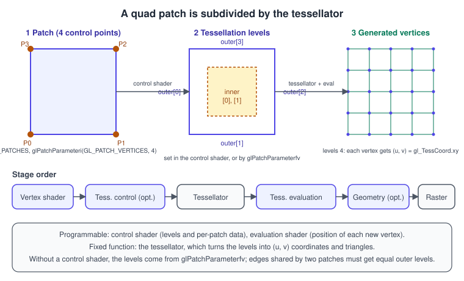
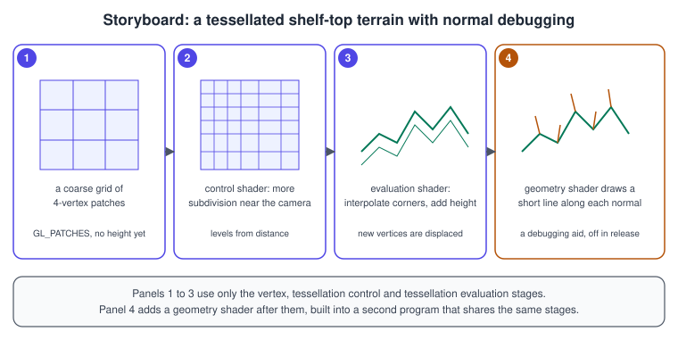
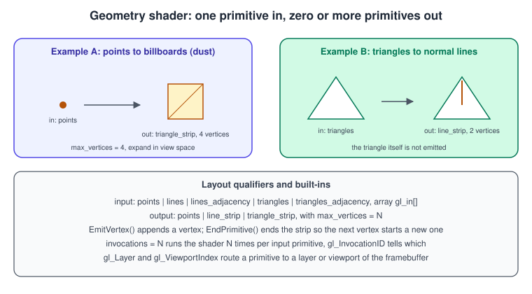

Geometry and Tessellation Shaders
|
This content was generated with the assistance of AI and should be verified against the official documentation before being relied on in production. |
Between the vertex shader and the rasteriser, OpenGL has room for three more programmable stages. The tessellation control and tessellation evaluation stages, with a fixed-function tessellator between them, subdivide a patch of control points into many triangles, so a coarse mesh can gain detail near the camera and a displacement map or a formula can move the new vertices. The geometry shader receives a whole primitive and may emit zero, one or many primitives of a different kind, which makes it convenient for expanding points into quads, drawing normals, or sending a primitive to a particular framebuffer layer. This page explains both, with a complete program for the Bookshelf scene’s table-top terrain, and says honestly when not to use them. The position of these stages in the pipeline is shown in The Rendering Pipeline, and the modern replacement, mesh shaders, in Advanced Pipeline Stages and Mesh shaders.
The facts were checked in November 2026. The versions documented are OpenGL 4.6 core (GLSL 4.60) and OpenGL ES 3.2 (GLSL ES 3.20). Geometry shaders have been core since OpenGL 3.2 and tessellation since OpenGL 4.0; both are core in ES 3.2 (earlier ES versions need extensions) and absent from OpenGL ES 3.0, WebGL, WebGPU and Metal. The example needs a desktop GPU and driver with OpenGL 4.6 (the code uses 4.5 direct state access and 4.3 explicit uniform locations), GLFW, GLM and glad2, as described in Getting started on the desktop.
Tessellation
The idea
A patch is a primitive with a user-defined number of control points (1 to GL_MAX_PATCH_VERTICES, at least 32). You draw it
with the primitive type GL_PATCHES, after telling OpenGL how many vertices make a patch with
glPatchParameteri(GL_PATCH_VERTICES, n). The vertex shader runs for each control point, as usual. Then:
-
The tessellation control shader (TCS) runs once per output control point of the patch, in groups called invocations that can see all the patch’s input points. It can transform the control points and, above all, it writes the tessellation levels that say how finely to subdivide. This stage is optional: without it the levels come from
glPatchParameterfv(GL_PATCH_DEFAULT_OUTER_LEVEL, ...)andGL_PATCH_DEFAULT_INNER_LEVEL. -
The fixed-function tessellator generates new vertices in a normalised domain (a quad, a triangle or a set of isolines) and connects them into primitives. Its only inputs are the levels and the layout qualifiers.
-
The tessellation evaluation shader (TES) runs once per generated vertex. It receives the vertex’s coordinates in the domain (
gl_TessCoord) and the patch’s control points, and outputs the final position and any varyings. This is where interpolation and displacement happen.

Domains, spacing and levels
The TES declares the domain, the spacing and the orientation as layout qualifiers:
layout(quads, fractional_odd_spacing, ccw) in;Source: OpenGL Wiki: Tessellation
| Qualifier | Meaning |
|---|---|
|
Domain is a unit square. |
|
Domain is a triangle. |
|
Domain is a set of horizontal lines in a unit square, used for hair, strands and curves. |
|
Each level is clamped to \([1, \max]\) and rounded up to the next integer. Subdivision changes in jumps ("popping") as the level varies. |
|
Rounded up to the next even integer, with the new vertices sliding in from their neighbours, so the mesh morphs smoothly. The minimum effective level is 2. |
|
Same, but rounding to odd integers. The minimum effective level is 1, which makes it a common choice for terrain. |
|
Winding of the generated triangles. It must match the front-face setting if face culling is on. |
|
Emit points for the generated vertices instead of lines or triangles. |
The levels are written in the TCS to gl_TessLevelOuter[4] and gl_TessLevelInner[2]. For the quads domain, outer[0] to
outer[3] control the edges at u = 0, v = 0, u = 1 and v = 1 in this order (the left, bottom, right and top edges when u points
right and v up), and inner[0], inner[1] control the interior in the two directions. For triangles, outer[0] to outer[2]
are the three edges and inner[0] the interior. The largest level that is allowed is GL_MAX_TESS_GEN_LEVEL, which is at least
64. A level of 0 or less (or NaN) for any outer level discards the whole patch, which is a cheap way to cull patches that are
off screen.
Cracks: shared edges must agree
Two patches that share an edge produce vertices along that edge independently, and the vertices only match if both patches use the same outer level for it and compute positions identically. The rule to follow is: derive the outer level of an edge only from data that both neighbours see, such as the two endpoints of that edge, never from the patch’s centre. The example computes the level from the edge midpoint’s distance to the camera, which is the same for both patches. Then the TES positions must agree on the edge: with plain interpolation of shared control points, and the same height function, they do.
Tessellation in the Bookshelf: terrain and levels of detail
The Bookshelf’s tabletop is a rough terrain on which the shelf stands. It is a 16 by 16 grid of quad patches. The control shader chooses the levels from the distance of each edge to the camera, so near patches get 30 or more segments per edge and distant patches only a few. The evaluation shader interpolates the four corners, adds a procedural height, and computes the normal by finite differences.

Complete example
// terrain.cpp - distance-based tessellation, displacement and a geometry-shader normal view.
// Keys: W wireframe, N normals, Up/Down detail, Escape quit.
#include <glad/gl.h>
#include <GLFW/glfw3.h>
#include <glm/glm.hpp>
#include <glm/gtc/matrix_transform.hpp>
#include <glm/gtc/type_ptr.hpp>
#include <cmath>
#include <cstdio>
#include <cstdlib>
#include <initializer_list>
#include <string>
#include <utility>
#include <vector>
namespace {
const std::string kHeader = "#version 460 core\n";
const std::string kVertexSrc = kHeader + R"(
layout(location = 0) in vec2 aXZ;
void main() { gl_Position = vec4(aXZ.x, 0.0, aXZ.y, 1.0); } // control point in world space
)";
const std::string kControlSrc = kHeader + R"(
layout(vertices = 4) out;
layout(location = 4) uniform vec3 uEye;
layout(location = 5) uniform float uLodScale; // larger = more detail at the same distance
// The level depends only on the edge endpoints, so both patches sharing an edge agree.
float levelFor(vec3 a, vec3 b) {
float d = distance(0.5 * (a + b), uEye);
return clamp(uLodScale / d, 1.0, 64.0); // 64 is the guaranteed GL_MAX_TESS_GEN_LEVEL
}
void main() {
gl_out[gl_InvocationID].gl_Position = gl_in[gl_InvocationID].gl_Position; // pass control points on
if (gl_InvocationID == 0) {
vec3 p0 = gl_in[0].gl_Position.xyz, p1 = gl_in[1].gl_Position.xyz;
vec3 p2 = gl_in[2].gl_Position.xyz, p3 = gl_in[3].gl_Position.xyz;
gl_TessLevelOuter[0] = levelFor(p0, p3); // edge u = 0
gl_TessLevelOuter[1] = levelFor(p0, p1); // edge v = 0
gl_TessLevelOuter[2] = levelFor(p1, p2); // edge u = 1
gl_TessLevelOuter[3] = levelFor(p3, p2); // edge v = 1
float inner = max(max(gl_TessLevelOuter[0], gl_TessLevelOuter[1]),
max(gl_TessLevelOuter[2], gl_TessLevelOuter[3]));
gl_TessLevelInner[0] = inner;
gl_TessLevelInner[1] = inner;
}
}
)";
const std::string kEvalSrc = kHeader + R"(
layout(quads, fractional_odd_spacing, ccw) in;
layout(location = 0) uniform mat4 uViewProj;
layout(location = 0) out vec3 tPos;
layout(location = 1) out vec3 tNormal;
float height(vec2 xz) {
return 0.35 * sin(1.7 * xz.x) * cos(1.3 * xz.y) + 0.12 * sin(4.0 * xz.x + 2.0 * xz.y);
}
void main() {
vec2 uv = gl_TessCoord.xy;
vec3 p0 = gl_in[0].gl_Position.xyz, p1 = gl_in[1].gl_Position.xyz;
vec3 p2 = gl_in[2].gl_Position.xyz, p3 = gl_in[3].gl_Position.xyz;
vec3 p = mix(mix(p0, p1, uv.x), mix(p3, p2, uv.x), uv.y); // bilinear interpolation of the corners
p.y = height(p.xz);
const float e = 0.01; // finite-difference normal
float dx = height(p.xz + vec2(e, 0.0)) - height(p.xz - vec2(e, 0.0));
float dz = height(p.xz + vec2(0.0, e)) - height(p.xz - vec2(0.0, e));
tNormal = normalize(vec3(-dx / (2.0 * e), 1.0, -dz / (2.0 * e)));
tPos = p;
gl_Position = uViewProj * vec4(p, 1.0);
}
)";
const std::string kFragmentSrc = kHeader + R"(
layout(location = 0) in vec3 tPos;
layout(location = 1) in vec3 tNormal;
layout(location = 0) out vec4 outColor;
void main() {
vec3 n = normalize(tNormal);
float diff = max(dot(n, normalize(vec3(0.4, 0.9, 0.3))), 0.0);
vec3 base = mix(vec3(0.40, 0.28, 0.16), vec3(0.45, 0.60, 0.30), clamp(tPos.y * 1.6 + 0.5, 0.0, 1.0));
outColor = vec4(pow(base * (0.2 + 0.8 * diff), vec3(1.0 / 2.2)), 1.0);
}
)";
// Geometry shader: for every triangle, draw a short line along each vertex normal.
const std::string kGeometrySrc = kHeader + R"(
layout(triangles) in;
layout(line_strip, max_vertices = 6) out;
layout(location = 0) in vec3 tPos[];
layout(location = 1) in vec3 tNormal[];
layout(location = 0) uniform mat4 uViewProj;
layout(location = 6) uniform float uNormalLen;
void main() {
for (int i = 0; i < 3; ++i) {
vec3 n = normalize(tNormal[i]);
gl_Position = uViewProj * vec4(tPos[i], 1.0);
EmitVertex();
gl_Position = uViewProj * vec4(tPos[i] + n * uNormalLen, 1.0);
EmitVertex();
EndPrimitive(); // each line is its own primitive
}
}
)";
const std::string kLineFragmentSrc = kHeader + R"(
layout(location = 0) out vec4 outColor;
void main() { outColor = vec4(1.0, 0.6, 0.1, 1.0); }
)";
void APIENTRY debugCallback(GLenum, GLenum type, GLuint, GLenum severity, GLsizei,
const GLchar* msg, const void*) {
if (severity == GL_DEBUG_SEVERITY_NOTIFICATION) return;
std::fprintf(stderr, "GL %s: %s\n", type == GL_DEBUG_TYPE_ERROR ? "error" : "message", msg);
}
GLuint compile(GLenum type, const std::string& src) {
GLuint s = glCreateShader(type);
const char* c = src.c_str();
glShaderSource(s, 1, &c, nullptr);
glCompileShader(s);
GLint ok = 0;
glGetShaderiv(s, GL_COMPILE_STATUS, &ok);
if (!ok) {
char log[4096];
glGetShaderInfoLog(s, sizeof log, nullptr, log);
std::fprintf(stderr, "shader error (type 0x%x):\n%s\n", type, log);
std::exit(1);
}
return s;
}
GLuint makeProgram(std::initializer_list<std::pair<GLenum, const std::string*>> stages) {
GLuint p = glCreateProgram();
std::vector<GLuint> shaders;
for (const auto& st : stages) {
shaders.push_back(compile(st.first, *st.second));
glAttachShader(p, shaders.back());
}
glLinkProgram(p);
GLint ok = 0;
glGetProgramiv(p, GL_LINK_STATUS, &ok);
if (!ok) {
char log[4096];
glGetProgramInfoLog(p, sizeof log, nullptr, log);
std::fprintf(stderr, "link error:\n%s\n", log);
std::exit(1);
}
for (GLuint s : shaders) glDeleteShader(s);
return p;
}
bool gWire = false, gNormals = true;
float gLod = 120.0f;
void onKey(GLFWwindow* win, int key, int, int action, int) {
if (action == GLFW_RELEASE) return;
if (key == GLFW_KEY_ESCAPE) glfwSetWindowShouldClose(win, GLFW_TRUE);
if (key == GLFW_KEY_W && action == GLFW_PRESS) gWire = !gWire;
if (key == GLFW_KEY_N && action == GLFW_PRESS) gNormals = !gNormals;
if (key == GLFW_KEY_UP) gLod *= 1.1f;
if (key == GLFW_KEY_DOWN) gLod /= 1.1f;
}
} // namespace
int main() {
if (!glfwInit()) return 1;
glfwWindowHint(GLFW_CONTEXT_VERSION_MAJOR, 4);
glfwWindowHint(GLFW_CONTEXT_VERSION_MINOR, 6);
glfwWindowHint(GLFW_OPENGL_PROFILE, GLFW_OPENGL_CORE_PROFILE);
glfwWindowHint(GLFW_OPENGL_DEBUG_CONTEXT, GLFW_TRUE);
GLFWwindow* win = glfwCreateWindow(1100, 680, "Bookshelf GL: tessellated terrain", nullptr, nullptr);
if (!win) { glfwTerminate(); return 1; }
glfwMakeContextCurrent(win);
glfwSwapInterval(1);
glfwSetKeyCallback(win, onKey);
if (!gladLoadGL(glfwGetProcAddress)) { std::fprintf(stderr, "glad failed\n"); return 1; }
glEnable(GL_DEBUG_OUTPUT);
glDebugMessageCallback(debugCallback, nullptr);
GLint maxPatch = 0, maxLevel = 0;
glGetIntegerv(GL_MAX_PATCH_VERTICES, &maxPatch);
glGetIntegerv(GL_MAX_TESS_GEN_LEVEL, &maxLevel);
std::printf("max patch vertices %d, max tessellation level %d\n", maxPatch, maxLevel);
GLuint terrainProg = makeProgram({{GL_VERTEX_SHADER, &kVertexSrc},
{GL_TESS_CONTROL_SHADER, &kControlSrc},
{GL_TESS_EVALUATION_SHADER, &kEvalSrc},
{GL_FRAGMENT_SHADER, &kFragmentSrc}});
GLuint normalProg = makeProgram({{GL_VERTEX_SHADER, &kVertexSrc},
{GL_TESS_CONTROL_SHADER, &kControlSrc},
{GL_TESS_EVALUATION_SHADER, &kEvalSrc},
{GL_GEOMETRY_SHADER, &kGeometrySrc},
{GL_FRAGMENT_SHADER, &kLineFragmentSrc}});
// A 16 x 16 grid of quad patches, 4 control points each: P0 (x0,z0), P1 (x1,z0), P2 (x1,z1), P3 (x0,z1).
constexpr int kN = 16;
constexpr float kCell = 0.5f, kHalf = kN * kCell * 0.5f;
std::vector<glm::vec2> ctrl;
for (int j = 0; j < kN; ++j)
for (int i = 0; i < kN; ++i) {
float x0 = -kHalf + i * kCell, x1 = x0 + kCell, z0 = -kHalf + j * kCell, z1 = z0 + kCell;
ctrl.insert(ctrl.end(), {{x0, z0}, {x1, z0}, {x1, z1}, {x0, z1}});
}
GLuint vbo, vao;
glCreateBuffers(1, &vbo);
glNamedBufferStorage(vbo, ctrl.size() * sizeof(glm::vec2), ctrl.data(), 0);
glCreateVertexArrays(1, &vao);
glVertexArrayVertexBuffer(vao, 0, vbo, 0, sizeof(glm::vec2));
glEnableVertexArrayAttrib(vao, 0);
glVertexArrayAttribFormat(vao, 0, 2, GL_FLOAT, GL_FALSE, 0);
glVertexArrayAttribBinding(vao, 0, 0);
glBindVertexArray(vao);
glPatchParameteri(GL_PATCH_VERTICES, 4); // four control points per patch
glEnable(GL_DEPTH_TEST);
glDisable(GL_CULL_FACE); // so the winding qualifier does not matter here
while (!glfwWindowShouldClose(win)) {
glfwPollEvents();
int w = 0, h = 0;
glfwGetFramebufferSize(win, &w, &h);
if (w == 0 || h == 0) { glfwWaitEvents(); continue; }
glViewport(0, 0, w, h);
glClearColor(0.07f, 0.08f, 0.11f, 1.0f);
glClear(GL_COLOR_BUFFER_BIT | GL_DEPTH_BUFFER_BIT);
const float t = static_cast<float>(glfwGetTime()) * 0.25f;
const glm::vec3 eye(std::sin(t) * 6.0f, 4.0f, std::cos(t) * 6.0f);
const glm::mat4 vp = glm::perspective(glm::radians(45.0f), float(w) / float(h), 0.1f, 100.0f) *
glm::lookAt(eye, glm::vec3(0.0f), glm::vec3(0, 1, 0));
glPolygonMode(GL_FRONT_AND_BACK, gWire ? GL_LINE : GL_FILL);
glUseProgram(terrainProg);
glUniformMatrix4fv(0, 1, GL_FALSE, glm::value_ptr(vp));
glUniform3fv(4, 1, glm::value_ptr(eye));
glUniform1f(5, gLod);
glDrawArrays(GL_PATCHES, 0, static_cast<GLsizei>(ctrl.size()));
if (gNormals) {
glPolygonMode(GL_FRONT_AND_BACK, GL_FILL);
glUseProgram(normalProg);
glUniformMatrix4fv(0, 1, GL_FALSE, glm::value_ptr(vp));
glUniform3fv(4, 1, glm::value_ptr(eye));
glUniform1f(5, gLod * 0.25f); // fewer triangles, so the lines stay readable
glUniform1f(6, 0.12f);
glDrawArrays(GL_PATCHES, 0, static_cast<GLsizei>(ctrl.size()));
}
glfwSwapBuffers(win);
}
glfwTerminate();
return 0;
}Source: OpenGL Wiki: Tessellation
Build it with the CMake file from
Framebuffers and render to texture, replacing the source file
name. Press W to see the generated vertices as a wireframe: the density follows the camera, and neighbouring patches meet
without cracks because every edge level depends only on that edge.
Things worth knowing about the listing:
-
In the TCS, only invocation 0 writes the levels, and the other invocations just pass their control point on. If an invocation reads control points written by other invocations, a
barrier()call is required after writing them. -
layout(location = ...)on the TES outputs, the GS inputs and the fragment inputs links the stages by location, which works the same with or without the geometry stage in the chain. -
The geometry program reuses the same tessellation stages and draws lines. Switching programs between two draws of the same patches is the only extra work.
-
glPolygonModeis available on desktop OpenGL only; OpenGL ES has no wireframe mode, so wireframes there use line primitives or a geometry shader with barycentric coordinates.
Geometry shaders
A geometry shader (GS) runs once per input primitive, after the vertex shader (or the tessellation evaluation shader). Its
input is a primitive of the type declared with its input layout qualifier, with all its vertices available in the array
gl_in (and user varyings as arrays):
layout(triangles) in; // points, lines, lines_adjacency, triangles, triangles_adjacency
layout(triangle_strip, max_vertices = 4) out; // points, line_strip, triangle_stripThe shader writes outputs and calls EmitVertex() to append a vertex to the current output primitive, and EndPrimitive() to
finish it so the next vertex starts a new one. Outputs have no persistent value after EmitVertex, so they must be set again for
each vertex. The declared max_vertices is an upper bound for one invocation, and emitting more is silently ignored.

Example: dust particles from points
The Bookshelf’s dust motes are single points in a vertex buffer. The geometry shader expands each into a camera-facing quad.
// vertex shader
#version 460 core
layout(location = 0) in vec3 aPos;
layout(location = 0) uniform mat4 uView;
void main() { gl_Position = uView * vec4(aPos, 1.0); } // view space, passed to the GS
// geometry shader
#version 460 core
layout(points) in;
layout(triangle_strip, max_vertices = 4) out;
layout(location = 4) uniform mat4 uProj; // uView in the vertex shader uses locations 0 to 3
layout(location = 8) uniform float uSize;
layout(location = 0) out vec2 gUv;
void main() {
vec4 c = gl_in[0].gl_Position; // centre in view space
const vec2 corner[4] = vec2[4](vec2(-1, -1), vec2(1, -1), vec2(-1, 1), vec2(1, 1));
for (int i = 0; i < 4; ++i) {
gUv = corner[i] * 0.5 + 0.5;
gl_Position = uProj * (c + vec4(corner[i] * uSize, 0.0, 0.0)); // offset in the view plane
EmitVertex();
}
EndPrimitive();
}
// fragment shader
#version 460 core
layout(location = 0) in vec2 gUv;
layout(location = 0) out vec4 outColor;
void main() {
float a = smoothstep(0.5, 0.0, length(gUv - 0.5)); // soft round mote
outColor = vec4(1.0, 0.95, 0.8, a * 0.5);
}Source: OpenGL Wiki: Geometry Shader
Draw with glDrawArrays(GL_POINTS, 0, count) and blending enabled (see
Blending, depth and stencil). The built-in point-sprite mode
(gl_PointSize with GL_PROGRAM_POINT_SIZE) gives square sprites without a geometry shader and is usually faster, and an
instanced quad is faster again; the geometry version is shown because it is flexible: it can emit anything.
Layered rendering and instancing
A geometry shader can write gl_Layer to choose the layer of a layered framebuffer attachment (a cube map face or an array
layer), and gl_ViewportIndex to choose among up to GL_MAX_VIEWPORTS viewports. With layout(invocations = 6) in; the shader runs six
times per input triangle and gl_InvocationID identifies the invocation, which renders a whole cube map in one draw:
#version 460 core
layout(triangles, invocations = 6) in;
layout(triangle_strip, max_vertices = 3) out;
layout(location = 0) uniform mat4 uFaceVP[6]; // one view-projection per cube face
void main() {
for (int i = 0; i < 3; ++i) {
gl_Layer = gl_InvocationID;
gl_Position = uFaceVP[gl_InvocationID] * gl_in[i].gl_Position; // world-space input positions
EmitVertex();
}
EndPrimitive();
}OpenGL 4.6 lets a vertex shader write gl_Layer directly (the GL_ARB_shader_viewport_layer_array functionality is core), so
many layered techniques, including cascaded shadow maps (see
Shadow mapping), no longer need a geometry shader at all.
OpenGL ES 3.2 differences
OpenGL ES 3.2 includes both stages, with the same layout qualifiers, built-ins and semantics as desktop GLSL, and a few differences in syntax and API:
-
Shaders start with
#version 320 esand need default precision statements in the fragment shader. In ES 3.0 and 3.1 the stages exist only as extensions (GL_EXT_geometry_shader,GL_EXT_tessellation_shader, or the Android Extension Pack), declared with#extension ... : require. -
Tessellation outputs of the TES that feed the geometry shader or the fragment shader are linked as usual. The constants differ:
GL_MAX_PATCH_VERTICESandGL_MAX_TESS_GEN_LEVELhave ES minimums of 32 and 64 as on the desktop; query them. -
GL_PATCHESandglPatchParameteriexist in ES 3.2; the API names are the same. -
There is no
glPolygonMode. -
Many mobile GPUs implement geometry and tessellation shaders slowly, because they run in the vertex-processing part of a tile-based pipeline and force the vertex results to be written to memory. Check that ES 3.2 is reported and measure.
-
iOS and WebGL never offer these stages: OpenGL ES on iOS stops at 3.0, WebGL 2 corresponds to ES 3.0, and Metal and WebGPU have no geometry shaders. On macOS, OpenGL 4.1 does contain both stages, but without direct state access, compute, or explicit uniform locations, so the example above would need
#version 410andglGetUniformLocation.
See OpenGL ES on Android and GLSL ES and portability for the portability details.
Performance and when not to use these stages
-
Geometry shaders are often slow. Their output size is variable, so the hardware must reserve memory for the worst case (
max_vertices) and cannot run the stage fully in parallel in order. Keepmax_verticesand the output components small. For particles, use instancing (see Instancing and indirect drawing) or point sprites. For layered rendering use the 4.6 vertex-shadergl_Layer. -
Tessellation pays off for smooth surfaces and terrain with large displacement, and for adaptive detail without storing several meshes. It costs for small triangles: aim for edges of about 8 to 16 pixels, and cull patches (outer level 0) that are off screen or back facing.
-
Displacement by texture needs matching normals. Sample the displacement texture in the TES with
textureLod(no derivatives are available in that stage) and derive the normal from the same source. -
Tessellation and geometry shaders are optional features elsewhere. Vulkan exposes them as optional device features, Metal tessellates through a compute pass and has no geometry shader, and WebGPU has neither. Designs that rely on them port poorly to the other APIs described in Cross-Platform Translation Layers.
-
Mesh and task shaders replace both. On hardware that supports
GL_EXT_mesh_shader, a mesh shader does the amplification work of both stages with better parallelism; see Mesh shaders.
Common mistakes
| Symptom | Likely cause |
|---|---|
Nothing draws with tessellation |
Drew with |
Visible cracks between patches |
Outer levels at a shared edge are computed differently on each side (for example from the patch centre), or the TES moves vertices with data that is not shared. |
Everything is one flat colour or the same level |
The TCS levels are uninitialised for invocations other than 0, or |
Geometry shader emits nothing |
|
Mesh pops as the camera moves |
|
Triangles vanish when culling is enabled |
The |
GLSL link error about interface variables |
Locations or types of TES outputs, GS inputs and fragment inputs differ, or GS inputs are not declared as arrays. |
What older guides get wrong
| Older source | What it shows | What to use today |
|---|---|---|
OpenGL SuperBible 4th edition, chapter 10 (OpenGL 2.1) |
Curves and surfaces with evaluators ( |
Evaluators and GLU NURBS are not in the core profile. Use tessellation shaders (OpenGL 4.0) with the control points as patch vertices. |
GLSL 1.50 specification (OpenGL 3.2) |
Introduces geometry shaders; tessellation does not exist yet |
GLSL 4.00 and later add tessellation; GLSL 4.60 is current. |
OpenGL ES 3.0 Programming Guide, chapter 14, and the Wiley ES 2.0 book |
Terrain and skyboxes built on the CPU as grids with no hardware tessellation; no geometry stage |
ES 3.2 adds both stages. For wide device support, keep a CPU or instanced-grid fallback. |
OpenGL ES 2 for Android, chapters 11 and 12 |
Height-map terrain as a CPU-built vertex grid and a skybox, in Java with ES 2.0 |
The approach is still valid as a fallback; add tessellation only when the device reports ES 3.2. |
References
-
OpenGL 4 reference pages: glPatchParameter, EmitVertex, EndPrimitive, gl_TessLevelOuter, gl_TessCoord
-
OpenGL ES 3 reference pages: OpenGL ES 3 reference pages
-
GLSL 4.60 specification: https://registry.khronos.org/OpenGL/specs/gl/GLSLangSpec.4.60.html
-
OpenGL ES 3.2 specification and GLSL ES 3.20: https://registry.khronos.org/OpenGL/index_es.php
-
OpenGL Wiki: Tessellation, Geometry Shader
-
OpenGL Wiki: Rendering Pipeline Overview
-
Mesh shader extension news: https://www.khronos.org/news/archives/opengl-resurges-in-2025-with-mesh-shader-extensions-for-gaming
-
Books used for the comparison with older guides: OpenGL SuperBible, 4th edition, OpenGL ES 3.0 Programming Guide, OpenGL ES 2 for Android: A Quick-Start Guide; and the specification The OpenGL Shading Language, Version 1.50. See also the section bibliography